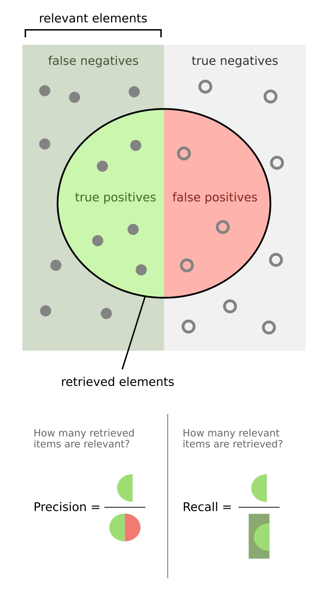
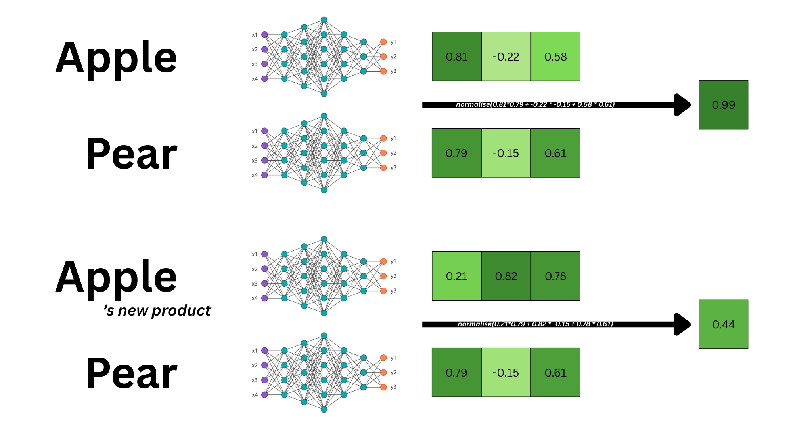
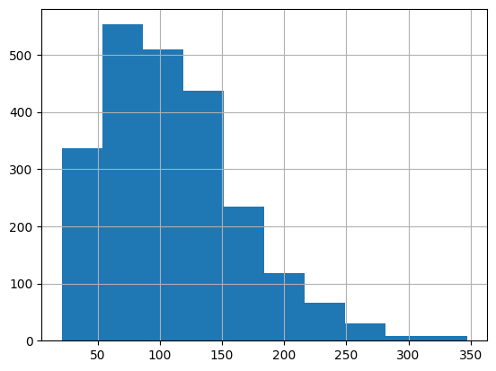
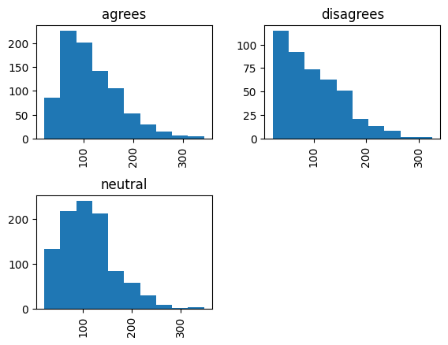
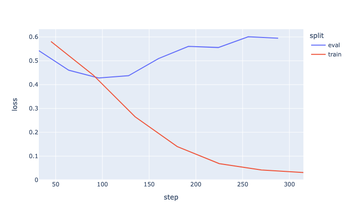
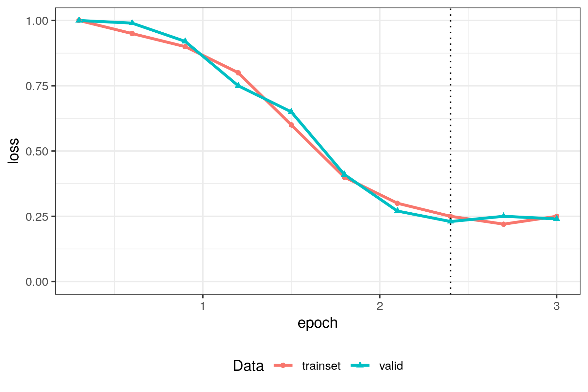
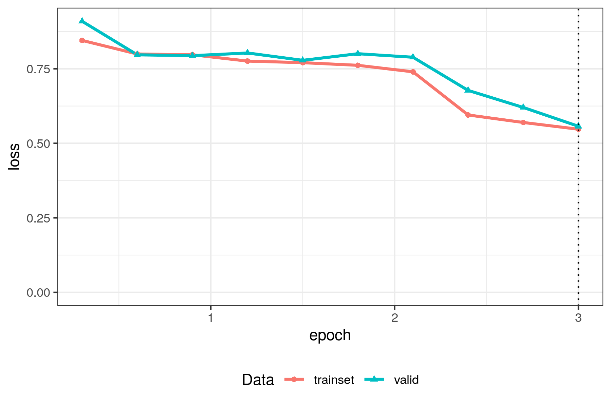
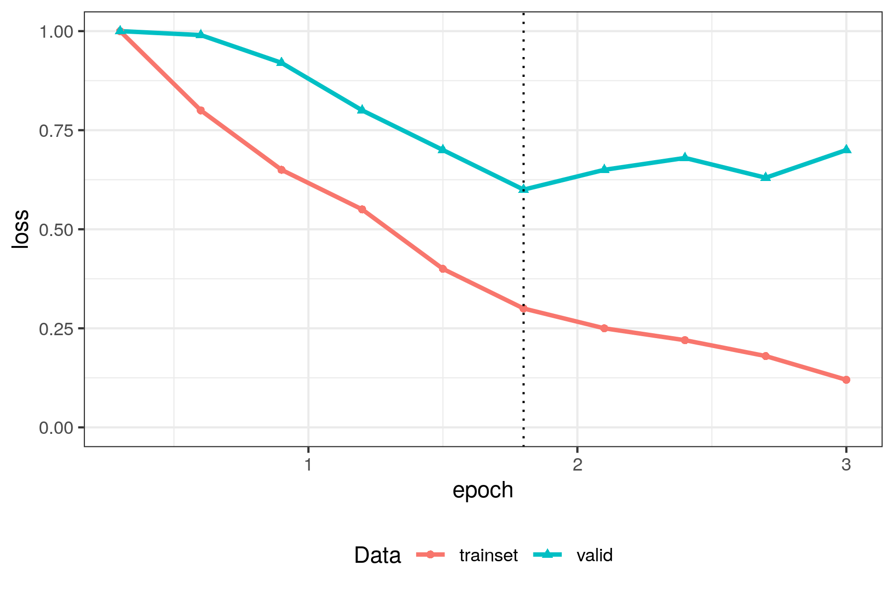

Augmented Social Scientist: train encoder models on a classification task
Introduction
Social scientists dealing with large corpora of documents (tweets, abstracts, newspaper articles, videos, …) often need to annotate each item with one or more labels. To complete this cumbersome task, social scientists have adopted many strategies such as hiring interns, externalise the task to a company such as MTurk, or use computers to do the job (SOURCE of fun fact ?). Since the development of LLMs, it has now become a common practice to use them as annotators in social science contexts (Gilardi et al., 2023; Bonikowski et al, 2022; Do et al., 2022). For instance Claesson (2026) annotated 4.5 million tweets addressed to French members of the parliament. Each tweet could be assigned the labels “attack”, “critique” or “support”. With these annotations, she was able to describe the conditions of hate speech towards French parliamentarians on twitter. In the Machine Learning jargon, the annotation task is referred to as a “classification task”.
AM: i want to say “its not magic, don’t use an LLM for fun and pretend it’s science”. Dont know if we must, dont know how to phrase it
These practices are at the intersection of quantitative social sciences and computer science called the Computational Social Sciences. This field of studies builds upon social science theories and leverages computer science methods to scale projects or offer new analyses. In the case of corpus annotation, scientists must define the labels and codebook based on social science theories. To assist social scientists in this task, our team developped ActiveTigger, an open-source software, designed by and for social scientists, to support collaborative text annotation and code-free model fine-tuning.
In this series of tutorials we dive into the technicalities of the classification pipeline using LLMs as annotators. In a previous tutoriel, we demonstrated how to use generative AI (genAI) for this task; the pipeline consisted of creating an appropriate prompt and retrieving the label in the genAI response. In this tutorial however we demonstrate how to use an encoder model (an LLM that does not generate texts) (AM: JB is it the right term or should we call it an embedding model?) to perform this task. We are going to use smaller1 open weights models2 and “teach” it how to annotate texts the way an expert would using the supervised learning framework3. Researchers can maintain more control on the model and its performance, however, implementing such techniques requires more NLP knowledge and coding skills. Therefore this tutorial is longer and introduces many concepts that could be overlooked when using black box models.
The main objective of this tutorial is to fine-tune an encoder model and introduce the key concepts so you can adapt the code to your specific task.
After presenting the objectives, materials and setup steps, we introduce the key NLP and Machine Learning concepts, we will break down the pipeline starting with loading the dataset and format it, then load the model and set the hyperparameters, finally launch the fine-tuning process. Once the process finishes, we will assess the performance and discuss how we can tweak the hyperparameters to reach satisfying performance. We conclude this tutorial with advices on how to correctly incorporate the results in a social science project. Throughout the tutoriel we provide practical insights on how to best use your hardware.
Objectives and materials
In this tutorial we will :
- Identify the main NLP and Machine Learning concepts.
- Understand the general pipeline for text classification with encoder models.
- Develop some familiarity with preprocessing and training techniques.
- Introduce the key metrics to evaluate models’ performance.
- Discuss how to properly incorporate this step in your research using state-of-the-art practices.
In this tutorial, we will NOT cover :
- The Python syntax, we expect readers to already have some knowledge of the coding language. See Lino’s course for an introduction
- The fundamentals of NLP and the intersection of linguistics and computer science, we will only introduce concepts necessary to understanding this tutorial. See Jurafsky
- The conceptualisation of your research question to fall into the automatic annotation framework, we expect readers to be able to design their protocol and motivate it using appropriate social sciences or any domain speficic concepts.
We provide a notebook with all cells pre-run here
Install environment:
For this tutorial we use Python version 3.12 and setup the environment with the following command:
pip install -qU pandas "transformers==4.52.4" datasets ipykernel matplotlib torch "accelerate>=0.26.0" scikit-learn plotly "nbformat>=4.2.0"We use SOTA Python librairies such as PyTorch and Transformers. These librairies are well documented and large online communities of users have posted much valuable content to assist you during your journey. More specifically, it is likely that you will face implementation issues related to the versions of the libraries; many forums will guide you into choosing the adequate librairies versions to install depending on your task and model of choice. For this reason, we recommend using a virtual environments manager such as conda4 or uv5 and keep track of your versions to save painful debugging time in the long run.
Key concepts and valuable resources to start your NLP journey
In this tutorial we will fine-tune a pretrained language model of type encoder to perform a classification task. The description itself needs clarification, we will endeavor to shed light on all of these keywords while remaining on the surface level to keep this tutorial legible. At each step, we provide valuable resources to further understand the concepts as well as the links to the litterature.
Question : est-ce qu’on parle d’autres encodeurs que des BERT dans ce tytorial, si non : pourquoi ne pas se concentrer sur les BERT ?
AM: Non, c’est vrai mais si on se concentre sur des BERTs des non-initiés risqueraient de ne pas faire le lien entre BERT et encodeurs. Je me dis si on définit largement les encodeurs c’est plus facile de dire : “nous on se concentre sur les BERTs qui est un type d’encodeur”. Opinion?
The classification task
The classification task is a concept from Machine Learning, it refers to an algorithm that will use input data (= predictors) to assign a class / label to each input. Scikit-Learn6 puts it this way: Identifying which category an object belongs to. In the context of annotation, the connection is fairly direct, each text input needs to be assigned a label, therefore it is a classification task.
Classification is part of the supervised learning family in machine learning: this means that to be able to assign labels, the algorithm will first need to be fitted onto some training data, in our case handmade annotations. The fitting/training process consists of providing inputs and labels, so the algorithm can adapt to the task and “learn”. This means that social scientists will first need to annotate a small set of texts in order to train the classifier.
Classifiers often have structuring parameters called hyperparameters that alter the algorithm and are not changed during training. These parameters must be set with great care in order to reach satisfying performance.
To evaluate classifiers we use normalised metrics such as Precision, Recall, Accuracy and F1 score. Depending on your research you may want to optimise one metric or another.
- Precision: “out of all the elements predicted as class A, how many were indeed from class A?”, this metric is rather conservative, optimising this score will limit the number of false positives.
- Recall: “out of all the elements that should have been classified as A, how many were indeed classified as A?”, this metric is XXX, optimising this score will limit the number of false negatives.
- Accuracy: “across all classes, how many elements were classified correctly?”, XXX critique of this metric JB?
- F1 score: this score is an harmonic mean of recall an precision.

To correctly assess a model evaluation and prevent cherry-picking, we proceed to separate evaluations on distinct subsets of texts and annotations:
- The training set: these items will be shown to the algorithm to learn. Metrics on the train set will be boosted.
- The dev set: these items will be used to assess the performance of the algorithm on new data. This set is used to choose the hyperparameters. Metrics on the dev set are likely to be boosted due to the fact that the hyperparameters are chosen to optimise this score.
- The test set: these items will be used to assess the performance of the algorithm with the chosen hyperparameters on new data. Metrics on the test set are meant to be representative of algorithm’s performance on new data. Scientists are encouraged to communicate on metrics computed on the test set to prevent from cherry picking the performance metrics.
Models
The models used in this tutorial are neural networks. Their behaviour is entirely determined by a large set of adjustable quantities called parameters — also referred to as weights and biases — and training a model means adjusting these quantities until it produces the output you expect. For the purposes of this tutorial, this is all you need to know about their internals.
- 3Blue1Brown, Neural networks: a visual, intuition-first video series. A good entry point if you have no prior exposure to the topic.
- Michael Nielsen, Neural Networks and Deep Learning: a free online book, self-contained and readable without an advanced mathematical background.
- Jurafsky & Martin, chapter 7: Neural Networks: the reference NLP textbook we cite throughout this tutorial, for readers who want the formal treatment.
Encoders vs. decoders — why not just use ChatGPT?
Modern language models7 come in two families, and they differ in what they produce and in how they learn your annotation categories:
- Decoder models (GPT, Llama, Claude, the models behind ChatGPT and similar tools) produce text, so they are well suited to open-ended tasks such as conversation, drafting, summarising or translation. To annotate a corpus with a decoder, you have to instruct it every time through a prompt, and hope it interprets your instructions correctly. These models are very large, rarely runnable on a personal computer, and typically used through an API, as we did in the previous tutorial.
- Encoder models (BERT and its relatives) produce no text at all, but an embedding: a numerical representation of a text’s meaning. This makes them well suited to tasks with a closed, well-defined output, such as classification, similarity ranking or clustering. Rather than being prompted, an encoder is fine-tuned on a few hundred texts you label yourself: it learns from your judgment calls, not from a description of them. Encoders are much smaller than decoders, and will most likely run on your own machine8.
That upfront annotation effort, and a model that only ever performs this one task, is the price you pay for an encoder — but in exchange, you keep full control over it. This has concrete consequences for cost, confidentiality and reproducibility, which we discuss next.
Pros and cons for social science research
- Coding skills: fine-tuning requires more code than an API call, which is both an opportunity to build skills and a cost in time. ActiveTigger offers a code-free alternative for collaborative annotation and fine-tuning.
- Hardware and cost: fine-tuning needs a machine to run on, while API calls need a paid key; neither is equally accessible to everyone.
- Confidentiality: sensitive corpora cannot be sent through an external API, so any model, generative or encoder, has to run on a trusted server instead. Encoders, being lighter on hardware, make that bar easier to clear.
- Open weights, control and reproducibility: most generative models are “closed weights”, usable only through an API, while HuggingFace models, encoder or generative, are “open weights” and can be downloaded. Providers rarely disclose the data behind a closed model or its future changes, which limits interpretability and means performance can shift after an update (source). Since you own the encoder and its fine-tuning data, your results stay reproducible and easier to interpret (XXX additional techniques to probe the model???).
How encoders represent text
The rest of this tutorial deals with encoder models only (AM: or maybe embedding models ? JB what’s the difference?): texts close in meaning are given close embeddings, a proximity measured by the “similarity score” (usually the cosine distance).

In Figure 2, “apple” and “pear” score high in similarity — but in the context of Apple’s new product, “apple”’s embedding shifts and the score drops. Classification works the same way: for a “left/right” label, the embeddings should capture what sets left-wing texts apart from right-wing ones.
Every encoder also has a maximum context window: the maximum9 number of tokens10 it can process at once — anything beyond is simply ignored. Older models had short windows (128 to 512 tokens), so long texts had to be split into sentences or paragraphs.
BERT was released by Google in 2019; CamemBERT (French), RoBERTa and ModernBERT are later variants built on it. In this tutorial we’ll use bert-base-uncased.
Pretrained Models and Fine-tuning
Pretrained means the heavy work has already been done for you: specialised organisations with the required hardware and data have already trained these models to recognise language patterns, a process that can take from days to months (XXX source), and published the resulting weights on HuggingFace for you to download.
Fine-tuning, by contrast, is quick: a few minutes, at most a few dozen on more limited hardware. It only nudges the weights and biases, by a much smaller amount than pretraining, turning the general-purpose model into a classifier for your own labels — one assessed with the same metrics (F1 score, …) and the same train, dev, test framework as any other classifier.
Fine-tuning pipeline: the essential
Let’s finally dive into the implementation of fine-tuning a pretrained language model of type encoder to perform a classification task!
In this section we will see the fundamentals to fine-tuning encoders for a classification task. We will use a dataset introduced by Luo et al., (2020); they collected journal articles, from which they extracted sentences conveying an opinion regarding global warming. Finally, they annotated each opinion as “agreeing”, “neutral” or “disagreeing” with regard to the following statement “Climate chage/global warming is a serious concern”.
The implementation follows a standard framework including the following steps:
- Load, clean and split your data: clean your texts off of noise and unwanted information and split your dataset into three subsets as described in Section 2.1.
- Choose a model from HuggingFace and load it on a personal computer.
- Finetune the model using the standard implementation
- Assess the model performance and update the hyperparameters
- Predict the labels of all items using the fine-tuned model
Load and preprocess your data
Data is available on the project’s GitHub repository, we can download it from there using Pandas.
import pandas as pd
url = "https://raw.githubusercontent.com/yiweiluo/GWStance/refs/heads/master/3_stance_detection/1_MTurk/full_annotations.tsv"
df_raw = pd.read_csv(url, sep = "\t") # Careful here, this document is a tsv (separator="\t" and not a csv, separator = ",")
df_raw.head()| MACE_pred | av_rating | sentence | worker_0 | worker_1 | sent_id | … | |
|---|---|---|---|---|---|---|---|
| 0 | disagrees | -1 | Global warming is a hoax. | disagrees | disagrees | s0 | … |
| 1 | neutral | 0.375 | Alarming levels of sea level rise are predicted to threaten Florida over the next decades. | neutral | neutral | s1 | … |
| 3 | agrees | 1 | Global warming is happening and it will be dangerous to human health and welfare. | agrees | agrees | s3 | … |
We will first need to explore the dataset and get a graps of its content as well as possible biases.
As a first step, let’s make a list of all the columns:
sent_id: the sentence id. It is not unique and represents something else, we will need to create a different ID.sentence: the sentence to annotate.worker_#N\(N\in [1,7]\): The team tasked MTurk workers to label the data for them. Each column concatenates the labels for a given worker.MACE_pred: this is the final prediction. The team used the MACE framework to create a debiased label from the workers’ labels.av_rating: The mean of all workers’ annotations for a given sentence (with disagree = 1, neutral = 0, agree = 1).
Other columns include disagree, agree and neutral but they are empty. The round and batch columns are irrelevant for our experiment.
df = df_raw.loc[:,["sent_id", "sentence", "MACE_pred", "av_rating"]]
df = df.rename(columns={"MACE_pred" : "label_text"}) # Rename MACE_pred for conveniency
dfLet’s have a look at the number of elements per class:
df.groupby(["label_text"]).size()MACE_pred
agrees 871
disagrees 441
neutral 988
dtype: int64We can see that there tends to be more “neutral” or “agrees” sentences. This means that “disagrees” sentences might be trickier to spot because there will be less elements to train on.
The preprocessing step is one of the most important step in the NLP pipeline, one needs to know what the corpus contains. We list a number of aspects you want to keep in mind when pre-processing your data:
Create a unique ID for each text
Creating an index for each text ensures that you will be able to aggregate the results. If your dataset does not contain an existing ID column, you can create one using the syntax of your choice. In our case, we will create an index that will look like this: ID-0001.
df["ID"] = [f'ID-{i:04}' for i in range(len(df))]The length of your documents
Assessing the length of your documents is crucial for two reasons:
- Firstly, as mentionned in Section 2.3, we must check that the length of the documents are compatible with the chosen model’s context window size 11. Also you will need to answer this question: “Where is the information that you’re looking for?”. For some tasks, you might want to work at the sentence level because you want to find specific elements of your corpus. For other tasks, working at the document or paragraph level is acceptable because you want to assess a global quantity
- Secondly, we need to make sure that models have roughly the same size to spot obvious issues (empty texts for instance) and ensure that we are not comparing documents of 5 words with 2 pages long documents.
Let’s analyse the len of sentences :
df["sentence-len"] = df["sentence"].apply(len)
df["sentence-len"].hist()
df["sentence-len"].describe()count 2300.000000
mean 109.890435
std 56.251317
min 21.000000
25% 70.000000
50% 100.000000
75% 145.000000
max 347.000000
Name: sentence-len, dtype: float64
In the context of our experiment, the sentences are quite short and their size is roughly standard. We will not exclude text inputs based on their length. Keep in mind that this model will be trained on a specific task and specific material. Performances are not guaranteed for texts too different in tone, source, date, or length from the training data.
Are there any unwanted characters
If you are used to TF-IDF techniques, you might be accoustumed to filtering punctuations and stop words. This is not something that we want to do when using transformers models. Indeed these models are trained with these characters and they convey meaningful context to the model. However, you might want to filter out elements that, for your study, do not carry semantic value. For instance, when working on social media content, depending on your analysis, you will want to either keep or remove emojis for instance12. At the end of the day, you want to make sure that the elements you keep in your text carry semantic information useful for annotating.
Our corpus is relatively clean given that the preprocessing stage happened at an earlier stage of the study. Skimming through the text entries, we can still find some irregularities regarding the punctuation. Let’s fix these:
def preprocess_text(text: str):
if not(isinstance(text, str)):
return pd.NA
return (
text
.replace("``", '"')
.replace("''", '"')
.replace(" ,", ",")
.replace(" .", ".")
.replace(" !", "!")
.replace(" ?", "?")
.replace(" :", ":")
.replace(" 's", "'s")
)
df["sentence-preprocessed"] = df["sentence"].apply(preprocess_text)Are there any duplicates?
This can be a fatal flaw as training a model with repeated elements can outweight other annotation or completely confuse it. Let’s see if we have duplicates:
df.groupby("sentence").size().value_counts()1 2034
2 8
50 5
Name: count, dtype: int64We can see that 5 elements are duplicated 50 times. Further investigations let us identify that sentences with indices starting with an “s” (['s0', 's1', 's2', 's3', 's4']) are duplicated 50 times. Let’s remove these rows.
df_no_duplicates = df.loc[~df["sent_id"].str.startswith("s"), :] We still need to deal with the 8 elements that have a duplicate. For conciseness’ sake we document this step in the appendices of this tutorial. You can run the lines yourself of load the checkpoint:
df_clean = pd.read_csv("./data/dataset-no-duplicates.csv")
df_clean| sent_id | sentence | label_text | av_rating | ID | sentence-len | sentence-preprocessed | |
|---|---|---|---|---|---|---|---|
| 0 | t0 | Warmer-than-normal s… | agrees | 0.625 | ID-0005 | 170 | Warmer-than-normal s… |
| 1 | t1 | We will continue to … | neutral | 0 | ID-0006 | 94 | We will continue to … |
| 3 | t11 | Claims of global war… | disagrees | -1 | ID-0008 | 55 | Claims of global war… |
[ES: C’est vraiment la règle à suivre ? On garde des éléments identiques avec des annotations discordantes ? Question de curiosité; AM: Il vaut mieux éviter les doublons oui, sinon tu créé du bruit ou tu suraligne avec une phrase. Je pense que c’est pas critique mais je trouvais ça important de s’y arrêter. Opinions?]
Summary and the key ideas behind these preprocessing steps
We have listed a limited number of preprocessings that you can perform. The first key idea behind these is to ensure that your documents will be read by the model and that the information will not be diluted in noise. To further ensure this, please refer to the model’s documentation.
AM: I want to introduce the idea of bias, but i’m not sure it’s the right time / right way. Opinions ?
df["sentence-len"] = df["sentence"].apply(len)
df.hist(column = "sentence-len", by="label_text")
df.groupby("label_text")["sentence-len"].describe()| label_text | count | mean | std | min | 25% | 50% | 75% | max |
|---|---|---|---|---|---|---|---|---|
| agrees | 871 | 114.91 | 56.0082 | 22 | 77 | 100 | 148 | 342 |
| disagrees | 441 | 98.0907 | 59.0937 | 22 | 51 | 86 | 134 | 325 |
| neutral | 988 | 110.732 | 54.4368 | 21 | 72 | 104 | 148 | 347 |

We can see that sentences are short, with similar length distributions across the “agrees” annotated items and “neutral” annotated items. On the other hand, “disagrees” annotated items seem to be shorter on average. This can be problematic if the gap is too large because you want to preserve some coherence between the texts. Also, automatic annotation algorithms exploit significant differences between items; at this point we do not know if the length if the texts is a difference to exploit or normalise.
Another key idea is to ensure sufficient homogeneity. Indeed, to perform the classification, an algorithm will exploit the differences between the texts with different labels. If texts of a certain class are longer than others, the algorithm might use this information to tell the difference. Depending on your research question, this might be a good thing or not.
Final step: Create splits
As described in Section 2.1, we need to split the availables annotations into three sets: train, dev and test. In general, we allocate 70% of the data to the train set, then 15% to dev set and test eval set. Depending on the size of your dataset, you might want to tweak this distribution. Ultimately, you want enough data for training and evaluation for scores to be significative.
from datasets import Dataset, DatasetDict
ds = Dataset.from_pandas(df_no_duplicates)
temp = ds.train_test_split(test_size = 0.3, shuffle=True)
ds_train = temp["train"]
temp = temp["test"].train_test_split(test_size = 0.5, shuffle = True)
ds_dev = temp["train"]
ds_test = temp["test"]
dsd = DatasetDict({
"train": ds_train,
"dev": ds_dev,
"test": ds_test
})DatasetDict({
train: Dataset({
features: ['sent_id', 'sentence', 'label_text', 'av_rating', 'ID', 'sentence-len',
'sentence-preprocessed', '__index_level_0__'],
num_rows: 1428
})
dev: Dataset({
features: ['sent_id', 'sentence', 'label_text', 'av_rating', 'ID', 'sentence-len',
'sentence-preprocessed', '__index_level_0__'],
num_rows: 306
})
test: Dataset({
features: ['sent_id', 'sentence', 'label_text', 'av_rating', 'ID', 'sentence-len',
'sentence-preprocessed', '__index_level_0__'],
num_rows: 307
})
})[ES: la terminologie est différente de ActiveTigger, sur quoi on se base pour ne pas avoir eval / test ? JE pense que ça doit être cohérent entre nos outils et nos leçons non ? AM: Je suis d’accord. Cependant la terminologie a souvent été confuse pour certaines personnes. Est ce que ça vaudrait pas le coup de réfléchir à une terminologie claire et mettre à jour ce tuto ET AT?]
Choose and load a model
In this tutorial we use the Transformers package, maintained by HuggingFace13. They propose a range of open source models and datasets downlable through their API. In the context of this tutorial, we will start working with the famous BERT model named: google-bert/bert-base-uncased
Models and their performance are highly sensitive to the task and context of use. When implementing an NLP task you might want to try several models to compare their performance. When choosing a model you want to take into account the following parameters:
- What task was the model trained for? You can see the list of tasks when browsing HuggingFace’s models. In the context of this tutorial, we want to perform a Text Classification task.
- What language was the model trained on? This one is trivial. However, depending on your corpus, you might want to find models that are multilingual. Performance of multilingual models can be below monolingual models; consider trying different models (is it still true ?? @ Léo). You can also try and translate your corpus into one language and use a monolingual model.
- What documents was the model trained on? Evaluated on? Models performance can vary a lot when used on a certain domain or another. Make sure to use models that have been XXX BENCSSMARK @ Etienne @ Paul
- Is the model still relevant? Look at the number of downloads on the model’s page; this can give you a sense of the model’s popularity and (to some extent) performance. If downloads have dropped, this can be a sign that a newer version was published or that another model has become the new standard.
- Last but not least: How big is the model? You won’t get away with it, your laptop has limited computation capabilities, large models need appropriate hardware. Know your hardware and check what model you can run using this method.
To load the model we just need to use one of the AutoModel instance14. In our case we are going to use the AutoModelForSequenceClassification. To load the model we use the following command:
from transformers import AutoModelForSequenceClassification
labels = list(df["label_text"].unique())
num_labels = len(labels)
id2label = {id:label for id, label in enumerate(labels)}
label2id = {label:id for id, label in enumerate(labels)}
MODEL_NAME = "google-bert/bert-base-uncased"
model = AutoModelForSequenceClassification.from_pretrained(
MODEL_NAME,
num_labels=num_labels,
id2label=id2label,
label2id=label2id,
)Nota: for some models you might need to set trust_remote_code to True. Make sure you actually trust the model you are downloading.
We can easily observe the general architecture of the model by typing:
print(model)BertForSequenceClassification(
(bert): BertModel(
>>> This is the first step of the encoding process, use ready made embeddings
that will be modified with attention. We can find useful information:
- 30522 is the vocab size, there are 30522 entities for which there is a ready
made embedding.
- 768 is the dimension of the output embeddings
(embeddings): BertEmbeddings(
(word_embeddings): Embedding(30522, 768, padding_idx=0)
(position_embeddings): Embedding(512, 768)
(token_type_embeddings): Embedding(2, 768)
(LayerNorm): LayerNorm((768,), eps=1e-12, elementwise_affine=True)
(dropout): Dropout(p=0.1, inplace=False)
)
>>> This is where the attention takes place. You can see that the encoder is a
stack of 12 BERTlayers, themselves containing a self attention module. We find
again the dimension of the output embeddings: 768
(encoder): BertEncoder(
(layer): ModuleList(
(0-11): 12 x BertLayer(
(attention): BertAttention(
(self): BertSdpaSelfAttention(
(query): Linear(in_features=768, out_features=768, bias=True)
(key): Linear(in_features=768, out_features=768, bias=True)
(value): Linear(in_features=768, out_features=768, bias=True)
(dropout): Dropout(p=0.1, inplace=False)
)
(output): BertSelfOutput(
(dense): Linear(in_features=768, out_features=768, bias=True)
(LayerNorm): LayerNorm((768,), eps=1e-12, elementwise_affine=True)
(dropout): Dropout(p=0.1, inplace=False)
)
)
(intermediate): BertIntermediate(
(dense): Linear(in_features=768, out_features=3072, bias=True)
(intermediate_act_fn): GELUActivation()
)
(output): BertOutput(
(dense): Linear(in_features=3072, out_features=768, bias=True)
(LayerNorm): LayerNorm((768,), eps=1e-12, elementwise_affine=True)
(dropout): Dropout(p=0.1, inplace=False)
)
)
)
)
>>> This pooler is the component that will take the embedding of each token in
the sequence and produce a unique embedding, supposedly best representing the sequene.
(pooler): BertPooler(
(dense): Linear(in_features=768, out_features=768, bias=True)
(activation): Tanh()
)
)
(dropout): Dropout(p=0.1, inplace=False)
>>> This last component is the classifier layer, a neural network composed of 768
+ 3 nodes. The out_features=3 corresponds to the number of labels we are using for
annotation!
(classifier): Linear(in_features=768, out_features=3, bias=True)
)The AutoConfig class is very convenient for retrieveing information that may be difficult to obtain otherwise because models’ documentation sometimes lack precision. We load it like this:
from transformers import AutoConfig
print(AutoConfig.from_pretrained(MODEL_NAME))BertConfig {
"architectures": [
"BertForMaskedLM"
],
"attention_probs_dropout_prob": 0.1,
"classifier_dropout": null,
"gradient_checkpointing": false,
"hidden_act": "gelu",
"hidden_dropout_prob": 0.1,
>>> Embedding dimension
"hidden_size": 768,
"initializer_range": 0.02,
"intermediate_size": 3072,
"layer_norm_eps": 1e-12,
>>> Maximum context window
"max_position_embeddings": 512,
"model_type": "bert",
"num_attention_heads": 12,
"num_hidden_layers": 12,
"pad_token_id": 0,
"position_embedding_type": "absolute",
"transformers_version": "4.52.4",
"type_vocab_size": 2,
"use_cache": true,
>>> Vocab size identified earlier
"vocab_size": 30522
}Fine-tune the model
We are finally going to fine-tune the model on our specific data. To do so, we are going to proceed with the 3 following steps:
- Tokenize the dataset
- Setup the training arguments
- Launch training
Tokenize the dataset
Tokenizing consists of two steps, first text patterns are transformed into tokens from the model’s vocabulary, then each sentence is truncated or padded so that every entry has the same length.
tokenizer("Hello World! 😇")
# {'input_ids': [101, 7592, ...], 'token_type_ids': [0, 0, ...], 'attention_mask': [1, 1, ...]}
tokenizer("Hello World! 😇").input_ids
# [101, 7592, 2088, 999, 102] <- the token id
tokenizer.decode([101, 7592, 2088, 999, 100, 102])
# '[CLS] hello world! [UNK] [SEP]'
# [CLS] is the starting token and [SEP] the terminating one.
# The smiley is marked as unknown [UNK]
tokenizer.decode([101])
# '[CLS]' <- token number 101
tokenizer.decode([2088, 999])
# 'world!' <- tokens number 2088 and 999
tokenizer(
[lorem.get_sentence(count=20), # Very long
lorem.get_sentence(count=2)] # Very short
truncation = True,
padding = "max_length",
max_length = 50,
return_tensors = "np"
).input_ids.shape
# (2, 50) <- long entries are truncated and short ones are padded so that all tokenized entries are the same lengthThe tokenizer15 needs to be loaded just as we did with the model:
from transformers import AutoTokenizer
tokenizer = AutoTokenizer.from_pretrained(MODEL_NAME)Then choosing the parameters for the tokenizer and writing a preprocessing function:
def preprocess_dataset(row: dict):
tokenized_entry = tokenizer(
row["sentence-preprocessed"],
truncation = True,
padding = "max_length",
max_length = 400,
)
return {
**row.copy(),
"labels": int(label2id[row["label_text"]]),
**tokenized_entry
}
dsd = dsd.map(preprocess_dataset)
# Only keep columns useful for training
dsd = dsd.select_columns(['ID', 'labels', 'input_ids', 'token_type_ids', 'attention_mask'])
# Set the dataset dict format to torch
dsd = dsd.with_format("torch")
dsdDatasetDict({
train: Dataset({
features: ['ID', 'labels', 'input_ids', 'token_type_ids', 'attention_mask'],
num_rows: 1428
})
dev: Dataset({
features: ['ID', 'labels', 'input_ids', 'token_type_ids', 'attention_mask'],
num_rows: 306
})
test: Dataset({
features: ['ID', 'labels', 'input_ids', 'token_type_ids', 'attention_mask'],
num_rows: 307
})
})The data is ready to be used for Fine-Tuning!
Setup fine-tuning hyperparameters
The fine-tuning parameters are stored in the TrainingArguments16 object. We have selected the main parameters that you’ll want to look for during training, but you can browse the 117 parameters it can take. You’ll find more information about what hyperparameters represent and how to tune them in Section 4.1.
from transformers import TrainingArguments, Trainer
training_arguments = TrainingArguments(
# Hyperparameters
num_train_epochs = 5,
learning_rate = 5e-5,
weight_decay = 0.0,
optim = "adamw_torch_fused",
# Second order hyperparameters
per_device_train_batch_size = 4,
per_device_eval_batch_size = 4,
gradient_accumulation_steps = 8,
# Metrics
# metric_for_best_model="f1_macro", # TODO implement F1 as metric: MOVE TO EXPERT
# Pipe
output_dir = "./models/training",
eval_strategy = "steps" , eval_steps = 0.05,
logging_strategy = "steps", logging_steps = 0.05,
save_strategy = "steps" , save_steps = 0.05,
load_best_model_at_end = True,
save_total_limit = 2,
disable_tqdm = False,
)Launch fine-tuning
Finally, we can start the process, all it takes is 2 more lines of code:
trainer = Trainer(
model = model,
args = training_arguments,
train_dataset=dsd["train"],
eval_dataset=dsd["train_eval"],
)
trainer.train()| epoch | Step | Training loss | Evaluation loss |
|---|---|---|---|
| 0.5263 | 19 | 8.163 | 0.9146 |
| 1.053 | 38 | 6.869 | 0.8175 |
| 1.579 | 57 | 5.298 | 0.8265 |
| 2.105 | 76 | 4.4 | 0.8267 |
| 2.632 | 95 | 3.065 | 0.9924 |
| 3.158 | 114 | 2.548 | 1.032 |
| 3.684 | 133 | 1.826 | 0.9477 |
| 4.211 | 152 | 1.622 | 0.9651 |
| 4.737 | 171 | 1.05 | 1.1 |
| 5.0 | 190 | 1.09 | 1.14 |
As a result you will get get a list of folders17, each containing the following files:
config.json: a dictionnary with the config, similar toAutoConfig.model.safetensors: a file containing all the weights of the Model.optimizer.pt,rng_state.pthandscheduler.pt: a copy of the optimizer, rng_state and scheduler used during training.trainer_state.json: a dictionnary containing all metadata up to the current checkpoint.training_args.bin: a copy of the training arguments.
The model can be loaded like before:
reload_model = AutoModelForSequenceClassification.from_pretrained(
"./models/training/checkpoint-76")It is worth noting that the trainer output also contains the best training checkpoint trainer.state.best_model_checkpoint. In our case, the best checkpoint is the checkpoint number 38'./models/training/checkpoint-76' the evaluation loss reaches a minimum (0.81) for this checkpoint.
Use model for inference and evaluate performance
To evaluate the performance, we use the dev set (see Section 3.1) gold standard annotations and predicted ones, then compute the metrics introduced in Section 2.1: Accuracy, Precision, Recall and F1-score. Therefore the first step is to predict the labels on the dev set:
IDs = []
y_gold = []
y_pred = []
# Reload the best model:
model = AutoModelForSequenceClassification.from_pretrained(trainer.state.best_model_checkpoint)
model.eval()
for batch in tqdm(dsd["dev"].batch(8)):
IDs += [batch["ID"]]
y_gold += [batch["labels"]]
with torch.no_grad():
logits = model(input_ids = batch["input_ids"], attention_mask = batch["attention_mask"]).logits.softmax(1).numpy()
y_pred += [np.argmax(logits, axis=1)]
results = pd.DataFrame({
"ID": np.concat(IDs),
"gold": np.concat(y_gold),
"pred": np.concat(y_pred)
})If you want to develop your understanding of the objects we manipulate, we provide a setp by step description in the appendices
Note that this code snippet will only run if the model is loaded on your CPU. See Section 4.2 for device discussions.
Then, once we have the predictions, we can compute the metrics. In general, we recommand using the macro18 F1 as it is the most representative of the model performance and works well with unbalanced datasets. Either way, you can use scikit-learn’s classification_report function to compute all metrics at once :
from sklearn.metrics import classification_report
print(classification_report(
y_true = results["gold"].map(id2label)
y_pred = results["pred"].map(id2label)
)) precision recall f1-score support
agrees 0.74 0.61 0.67 122
disagrees 0.59 0.38 0.46 58
neutral 0.62 0.83 0.71 126
accuracy 0.66 306
macro avg 0.65 0.61 0.62 306
weighted avg 0.67 0.66 0.65 306Here we can see that the model’s performance for the labels “agrees” and “neutral” is decent, but would benefit from further hyperparameter tuning. On the other hand, the model does not recognise the “disagrees” label. All in all, the current finetuning leads to mediocre results. In Section 4, we will tweak the hyperparameters to reach better results.
Conclusion
In this section we have covered the basics to load the data and model, launch the fine-tuning and evaluate performances. We discussed:
- The importance of knowing your corpus and preprocessing the texts depending on your research question.
- How to choose a model depending on the task.
- Prepare the data for fine-tuning (tokenization and formatting) and set the hyperparameters.
- Launch the fine-tuning process.
- Use the model for inference and evaluate the model using classification metrics.
You now have all the technical knowledge necessary to fine-tune most classification models using the HuggingFace AutoModelForSequenceClassification pipeline. However, in the Section 3.4, we saw that the performance were not optimal. In the following section, we will explore other model outputs to gain further insights and modify the hyperparameters to reach better performances. Also, the pipeline did not make use of more advanced hardware such as GPUs and Apple MX chips, we will discuss how to adapt the code accordingly.
Training pipeline: advanced practices
Diagnose and fix training problems
In Section 3 we fine-tuned a BERT model and saved checkpoints containing crucial information; one of them is the learning curve. The learning curve tracks the loss function19 — a measure of the distance between the predicted labels and the gold standard labels — on the train set and the dev set as training progresses. We can retrieve it from the logs in trainer_state.json and plot it:
# TODO update and make it simpler
import json
import plotly.express as px
with open("./models/training/trainer_state.json", "r") as file: # MODIFY !!!
training_state = json.load(file)
loss = []
for log in training_state ["log_history"]:
step = log["step"]
if "loss" in log:
loss += [{"step": step, "loss": log["loss"], "split": "train"}]
elif "eval_loss" in log:
loss += [{"step": step, "loss": log["eval_loss"], "split": "eval"}]
else:
# thweird
print(log)
loss = pd.DataFrame(loss)
px.line(loss, x = "step", y = "loss", color = "split")
The train loss decreases steadily towards 0, while the dev loss decreases, reaches a minimum, then rises again. That rise is expected: it simply means the model keeps memorising the train set past the point where it stopped generalising better, which is why we reload the checkpoint at the minimum (Section 3.4) rather than the last one. What matters is how low that minimum is, and how the two curves sit relative to each other. Here is the pattern to aim for:
The perfect case scenario
- Both curves went down during training: the model has learned
- Both curves have the same loss values: no overfitting
- The curves are flat at the end: nothing more to be learned, apparently
Once your learning curve looks like this, you only have to look at the evaluation metrics to see if you are satisfied with the prediction quality. If it does not, one of the problems below is likely the cause — each comes with the hyperparameters that fix it.

To follow the rest of this section, one mental image is enough. Fine-tuning proceeds by small successive corrections: the model reads a batch of annotated texts, compares its predictions with your annotations, and adjusts its parameters slightly in the direction that reduces the gap. It then moves on to the next batch, and repeats until it has gone through the entire training set — that is one epoch. The hyperparameters below govern how many texts the model reads before each correction, how large each correction is, and how many times the model goes through your data.
Problem 1: the model hasn’t learned enough


At one extreme, both curves stay flat throughout training (left): the metrics are barely better than chance, and the losses have hardly moved — the corrections applied to the model were either too small to have any effect, or too few. At the other extreme, both curves are still going down together with no plateau in sight (right): the model is learning correctly, it simply hasn’t finished.
- The learning rate 🟢🟢🟢 (importance) sets the size of each correction. It is by far the most consequential hyperparameter: set too low, the fine-tuning leaves the model essentially unchanged. Try increasing it. Typical values: \([1e-6, 1e-4]\).
- The number of epochs 🟢 sets how many times the model goes through your training set. If performance was still improving when training stopped, the model simply did not get enough passes over your data. Typical values: 3-5, bearing in mind that each additional epoch costs computation time.
Problem 2: the model has learned your training set by heart

The model performs very well on the texts it was trained on, and noticeably worse on the dev set: both curves went down, but the train curve sits much lower than the dev curve. It has memorised your training examples instead of learning the distinction you are after. This is called overfitting, and it is the most common failure in this kind of project, particularly when annotations are few.
- The weight decay20 🟢🟢 discourages the model from adopting extreme parameter values, which is the mechanism through which memorisation usually happens. Increasing it constrains the model and pushes it towards more general solutions; setting it too high prevents it from learning at all. Typical values: 0.01-0.1.
- Lowering the learning rate or the number of epochs works towards the same end: fewer and gentler corrections leave the model less opportunity to fit the specifics of your examples.
- The most reliable remedy, however, is not a hyperparameter: annotate more data.
Problem 3: the fine-tuning is erratic

Performance jumps up and down from one evaluation to the next instead of improving steadily. The corrections are being computed on too little evidence at a time, so each one chases the peculiarities of a handful of texts rather than a general pattern.
- The batch size 🟢🟢 is the number of texts the model reads before each correction. The larger the batch, the more each correction reflects a general tendency of your corpus rather than the noise of a few individual texts. Typical values: 16-64.
- A learning rate set too high produces the same symptom for a different reason: each correction overshoots. If enlarging the batch is not enough, lower the learning rate.
Problem 4: the fine-tuning does not fit on your machine
This one does not show up on the learning curve: large batches are desirable, but the whole batch must be held in memory at once, and this is usually where a personal computer gives up (see Section 4.2). The way around it is to accumulate several small batches before applying a correction, which is almost equivalent and requires far less memory:
\[\text{Batch size} = \text{Device batch size} \times \text{Gradient accumulation steps}\]
- The device batch size is what your hardware actually processes at once: lower it until the training fits in memory.
- The gradient accumulation steps compensates, so that the effective batch size stays in the range you wanted.
Disk space calls for the same kind of attention. The eval and save strategies 🔴 can be set to "epoch" or "steps"; with "steps", the eval_steps and save_steps parameters control how often the model is evaluated and saved. Since each checkpoint can weigh several gigabytes, use save_total_limit21 to cap the number of checkpoints kept on disk.
If you only change one hyperparameter, change the learning rate. A reasonable strategy is to keep everything else at the values used in Section 3.3.2, try a few learning rates spanning the typical range (for instance 1e-5, 3e-5 and 5e-5), and compare the resulting learning curves. Only then is it worth tuning the weight decay and the batch size. Remember that these choices must be made by comparing performance on the dev set, never on the test set (Section 2.1).
Use GPU for faster training
This section is only useful if you have access to a GPU; if you don’t, training on CPU works exactly as shown earlier, just slower, and you can skip ahead to Section 4.3. If you have a NVIDIA GPU22 and have set up your cuda23 environment, or a Mac with an MX chip, you can accelerate training with cuda or mps respectively.
You can check if your environment is ready to use cuda and mps with the following lines:
from torch.cuda import is_available as cuda_available
from torch.mps import is_available as mps_available
print("CUDA: ", cuda_available())
print("MPS: ", mps_available())From there on, you will need to be aware of where your objects are stored. Indeed, in order to use the model on CUDA (or MPS), the input and the model need to be stored on the same hardware. The code for finetuning changes slightly:
# Choose your device
DEVICE = "cuda" # or "mps", or "cpu"
# Preprocess, tokenize, format and split your data
ds = ...
# Move the dataset on the desired device:
ds = ds.with_format("torch", device = DEVICE)
# Load the model
model = ...
# move the model to the desired device
model = model.to(device = DEVICE)
# You can check the model device :
print(model.device)
# Load the training arguments:
training_args = TrainingArguments(
...
bf16= str(device) == "cuda",
)
# Set up the trainer and launch the processingThe code for using the model for inference changes as well:
from torch import no_grad
IDs = []
y_gold = []
y_pred = []
# Reload the best model:
model = AutoModelForSequenceClassification.from_pretrained(trainer.state.best_model_checkpoint)
model = model.to(device=DEVICE)
model.eval()
if str(DEVICE)=="cuda": model = model.bf16() # Only works on GPUs
for batch in tqdm(dsd["dev"].batch(8)):
IDs += [batch["ID"]]
y_gold += [batch["labels"]]
with torch.no_grad():
probs = (
model(input_ids = batch["input_ids"], attention_mask= batch["attention_mask"])
.logits.cpu().softmax(1).float().numpy()
)
y_pred += [np.argmax(probs, axis=1)]
results = pd.DataFrame({
"ID": np.concat(IDs),
"gold": np.concat(y_gold),
"pred": np.concat(y_pred)
})If you don’t move the elements properly, you will face this error:
Expected all tensors to be on the same device, but found at least
two devices, cuda:0 and cpu! (when checking argument for argument
index in method wrapper_CUDA__index_select)The final step is to clean your GPU after using it. Otherwise you risk clogging the memory and flushing it becomes a hassle. Best practices include working inside a try/except/finally loop to make sure the memory is clean after use.
from gc import collect as gc_collect
from torch.cuda import empty_cache, synchronize, ipc_collect
from torch.cuda import is_available as cuda_available
tokenizer, model, dsd, trainer = (None, ) * 4 # All objects that are moved to the GPU
try:
tokenize = ...
dsd = ...
model = ...
trainer = ...
trainer.train()
except Exception as e:
print("# ERROR" + "#" * 93)
print(e)
print("#" * 100)
finally:
del tokenizer, model, dsd, trainer # All objects that are moved to the GPU
empty_cache()
if cuda_available():
synchronize()
ipc_collect()
gc_collect()Read the errors
You will face many, many errors. Sometimes they are random and rerunning the script / restarting the kernel will solve the issue. Others are subtle and difficult to identify. In such case, copy paste the error in google (in our experience, genAI is less likely to provide you the right answer), you’ll find forums with people who faced the same issue. As stressed in the introduction, downgrading/upgrading some libraries is likely to solve the issue. The four issues below are the ones you are most likely to run into — keep this section as a reference to come back to rather than something to read end to end.
Many errors are raised due to the functions assuming that your columns are well named and that the data has the right format. Make sure to have the following:
"text"column with the text as string"labels"column with the labels as int; if you have multiple labels. Make sure this is a Tensor of integers"input_ids"a column with the tokens truncated and padded to the same length. Make sure this is a Tensor of integers"attention_mask"a column with the tokens truncated and padded to the same length. Make sure this is a Tensor of integers
Also, depending on the model you’re using these columns can have different names. Make sure to check the huggingface documentation related to the model you are using as well as forums.
If you face this error using a GPU :
NVML_SUCCESS == r INTERNAL ASSERT FAILED at "/home/conda/feedstock_root/build_artifacts/libtorch_1750199048837/work/c10/cuda/CUDACachingAllocator.cpp":1016, please report a bug to PyTorch.It is likely that you have reached the memory limit of your hardware. Reducing the device batch size or using a smaller model is likely to solve your issue. If you use a CPU the error becomes: Invalid buffer size:
If you face the following error:
ValueError: too many values to unpack (expected 2)The issue is likely to come from the tokenization step. If you type: dsd["train"][0]["input_ids"].shape, it must return torch.Size([400]) and not torch.Size([1, 400]). Ensure that the tokenizer does not use return_tensors="pt" and that you use dsd.with_format("torch").
You might face this scary issue:
There were missing keys in the checkpoint model loaded: ['bert.embeddings.LayerNorm.weight', ...
There were unexpected keys in the checkpoint model loaded: ['bert.embeddings.LayerNorm.beta', ...This is merely a convention issue. Some models/versions use beta/gamma keywords instead of weights/biases. This is not a problem and the model solve this automatically. If the loaded model shows unexpected low performance, this might be a sign that the model did not solve this issue automatically. You might have to rename the parameters yourself using the right convention (very unlikely).
Some good practices
Save your model and results
??? necessary ??? -> Export to hugging face for reproducibility and open science
On annotating your Dataset
@ Etienne
What’s a good score?
@ Etienne @ Julien
Conclusion
In this tutorial we covered many topics: - In Section 2 we defined some key concepts such as the supervised learning framework, BERT models and fine-tuning. It is important to have a broad understanding of these in order to easily manipulate the objects and adapt the code. - In Section 3 we laid out the usual fine-tuning pipeline including data processing and formatting, choosing the model, launching the fine-tuning and assessing the performance. Section 3.5 summarises the main steps. - In Section 4 we stopped on more complex concepts such as the reading curve and provided instructions on how to tweak the hyperparameters. This section also discusses using GPU for quicker training and provides hotfixes for common errors.
Bibliography
Footnotes
Smallest generative models weigh 16GB (Llama-3-8B) and larger models can easily reach 850GB (Deepseek-V4-pro). On the other hand, the models we’ll use weigh from 500MB (google-bert/bert-base-uncased) to 2.3BG (FacebookAI/xlm-roberta-large).↩︎
Meaning you can download models on your machine, which is not the case for most proprietary models.↩︎
If you are unfamiliar with the term “supervised learning”, it is defined in Section 2.1.↩︎
More on UV, XXXX↩︎
Most famous Python library for Machine Learning. This library has had a major impact in the coding community, notably it imposed the
.fit.transformsyntax.↩︎Most are built on the Transformer architecture, introduced by Google in 2017 — the same word behind the
transformersPython library you’ll use throughout this tutorial.↩︎It tends to be less likely as newer models tend to be larger. Read more in the Choose and load a model section.↩︎
Some techniques allow users to exceed the maximum context window, please refer to XXX @ Léo @ Alexandre↩︎
Texts cannot be used directly and must undergo a tokenization process. Models come with a vocabulary of tokens, each text is therefore a combination of “tokens” from the vocabulary. Read more↩︎
Here we mention how the chose model impacts the preprocessing of the texts whereas we have not chosen a model yet. This is a good example of how non-linear pipelines are, there are many back and forths stressing the need for a well documented pipeline.↩︎
You need to ensure that the model you are using recognises emojis.↩︎
HuggingFace is a company for profit specialised in NLP and machine learning. They maintain many SOTA libraries such as Transformers, Datasets or Sentence Transormers. On top of maintaining the libraries, they publish posts about the latest tech, tutorials on their libraries, host a forum for debugging but also propose inference and training solutions if you don’t have access the required hardware.↩︎
Auto Classes are ready-to-use classes that will set up the right architecture depending on your task.↩︎
Texts cannot be used directly and must undergo a tokenization process. Models come with a vocabulary of tokens, each text is therefore a combination of “tokens” from the vocabulary. Read more↩︎
The syntax would be the same if you trained a model from scratch, therefore the pipeline uses training related names (Trainer, TrainingArguments, …), but that does not change the fact that we are indeed fine-tuning a model.↩︎
Depending on the
save_strategyyou set.↩︎“macro” means that the evaluation normalises for the number of labels. Example in the appendices.↩︎
The loss function is a function measuring the distance between the predicted labels and the gold standard labels.↩︎
AKA: L2-regularization.↩︎
If you use
load_best_model_at_end=True, make sure to havesave_total_limit> 2, otherwise the best model will be overwritten by the last model (documentation).↩︎AMD GPUs do not have access to cuda but you can work you way out with alternative solutions like ZLuda↩︎